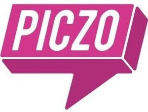

Trade Mark Journal No.2025/037 12 September 2025
WO0000001872844 (9,36,41,42)
Office of origin: Georgia
Date of International Registration:13 May 2025
Date of designation in the UK:
13 May 2025

The mark consists of a depiction of a raspberry-colored parallelepiped featuring three white edges and a raspberry-colored triangle attached to its bottom side. The front face of the parallelepiped displays the word element "PICZO" in white uppercase Latin letters.
The mark contains the colours raspberry and white.
International priority date claimed: 25 April 2025
(Georgia)
- Class 9
- Downloadable software and mobile applications for creating, customizing, and sharing personal webpages; software for social networking, digital communication, image and video sharing, and content publishing; downloadable software for managing digital tokens and cryptocurrency; cameras [photography]; camera filters; camera flashes; film cameras; multipurpose cameras; disposable cameras; instant print cameras; photo booths; handheld electronic devices for capturing, projecting, and sharing visual content; multimedia storage devices; computer application software for blockchain-based platforms, namely, software platforms for distributed applications and software using a consensus engine incorporating blockchain technology for securing data with cryptographic information; computer software platforms for developing and building of distributed software applications and distributed computing platforms; computer software platforms for blockchains, downloadable.
- Class 36
- Cryptocurrency financial services; cryptocurrency services; digital token issuance; digital token of value issuance; issuing of digital currency or digital tokens of value for use by members of an on-line community via a global computer network; cryptocurrency services, namely, issuing of digital currency or digital tokens of value, incorporating cryptographic protocols, used to operate and build applications and blockchains on a decentralized computer platform and as a method of payment for goods and services; financial exchange of virtual currency; issuance of tokens of value; electronic transfer of virtual currencies.
- Class 41
- Publication of digital magazines; online contests; organizing online events in the field of digital art and internet culture; developing, arranging, and conducting educational conferences in the field of blockchain technology; educational services, namely, developing, arranging, and conducting classes, seminars, conferences, workshops, retreats, camps, and field trips in the field of blockchain technology and distributed computing platforms, and distribution of training material in connection therewith.
- Class 42
- Website design and development; blockchain as a service [Baas]; application service provider [ASP]; software development services; design, development, and implementation of software for distributed computing platforms; design, development, and implementation of software in the field of blockchains; research and development of computer software; software development and product development consulting in the field of distributed computing platforms; software development and product development consulting in the field of blockchains, cloud software/software-as-a-service.
Nikoloz Gogilidze